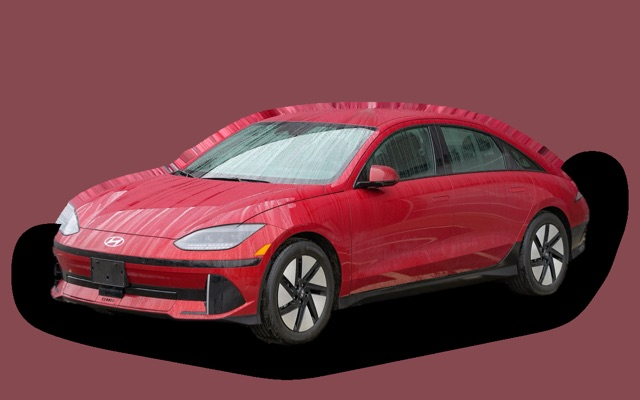
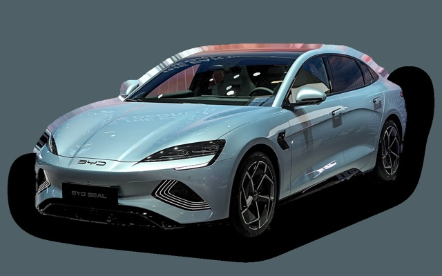
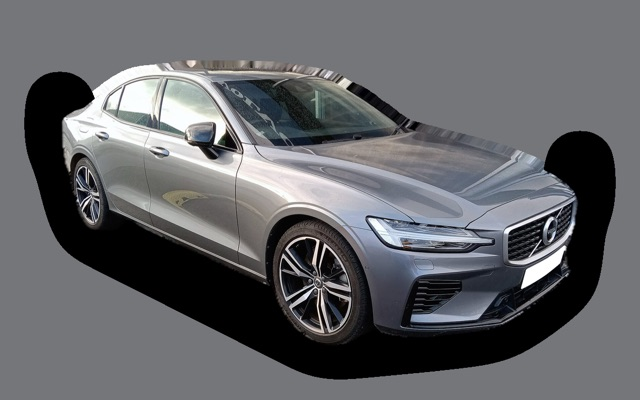
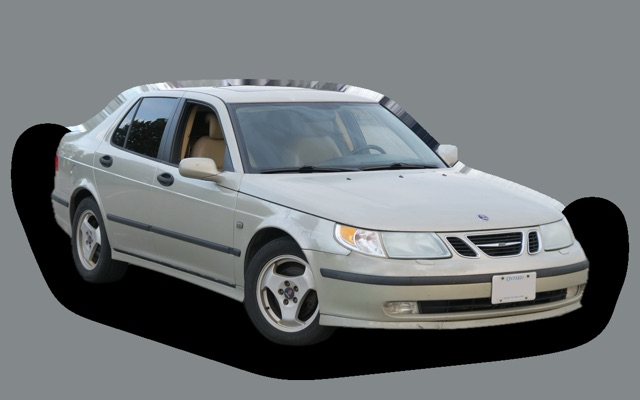
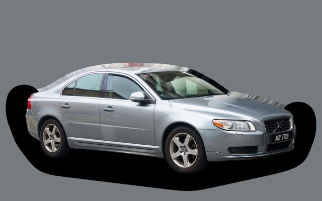

Vad kostar en Mercedes-Benz CLA per månad?
En Mercedes-Benz CLA från 2022 kostar cirka 4 127 kr i månaden, allt inräknat.
4 127 krper månad, årsmodell 2022
299 000 krpris, årsmodell 2022
374 900 krsenaste nypris
Cprisvärdhetsbetyg (2022)
Månadskostnad per årsmodell
| Årsmodell | Version i beräkningen | Pris | Per månad | Betyg |
|---|---|---|---|---|
| 2025 | CLA 200 163, Progressive | 364 000 kr | 4 722 kr | C |
| 2022 | CLA 200 163, Progressive | 299 000 kr | 4 127 kr | C |
| 2019 | CLA 180 136, Progressive | 226 000 kr | 3 796 kr | C |
Räknat på 5 års ägande och 1 250 mil per år, med bränslepriser från 2026-10-22. Månadskostnaden innehåller värdeminskning, drivmedel, service och reparationer, försäkring och fordonsskatt.
Så fördelas kostnaden för en 2022:a
- Värdeminskning: 1 520 kr/mån
- Drivmedel: 1 358 kr/mån
- Service och reparationer: 677 kr/mån
- Försäkring: 477 kr/mån
- Fordonsskatt: 94 kr/mån
Begagnatpriser i annonser
| Årsmodell | Medianpris | Annonser | Typiskt miltal |
|---|---|---|---|
| 2025 | 389 400 kr | 6 | 2 300 mil |
| 2024 | 374 800 kr | 11 | 4 900 mil |
| 2023 | 324 400 kr | 32 | 6 000 mil |
| 2022 | 315 000 kr | 13 | 6 500 mil |
| 2021 | 290 000 kr | 42 | 9 200 mil |
| 2020 | 304 900 kr | 19 | 10 400 mil |
| 2019 | 254 900 kr | 20 | 11 600 mil |
Medianpriset i svenska annonser per årsmodell i oktober 2026 (källa: Blocket). Annonspriser är utgångspriser, och slutpriset kan bli lägre.
Motorer och versioner
| Motor | Drivmedel | Effekt | 0–100 km/h | Förbrukning (WLTP) | Räckvidd | Årsmodeller | Pristillägg |
|---|---|---|---|---|---|---|---|
| CLA 180 136 | Bensin | 136 hk | 9,2 s | 6,2 l/100 km | – | 2019–2023 | −33 000 kr |
| CLA 200 163 | Bensin | 163 hk | 8,2 s | 6,3 l/100 km | – | 2019–2025 | – |
| CLA 250 e laddhybrid 218 | Laddhybrid | 218 hk | 6,8 s | 1,2 l/100 km + 15,6 kWh/100 km | – | 2019–2025 | +63 000 kr |
| AMG CLA 35 4MATIC 306 | Bensin | 306 hk | 4,9 s | 8,4 l/100 km | – | 2019–2025 | +184 000 kr |
- Utrustning: Progressive, AMG Line (+25 000 kr)
Fakta
- Kaross
- Sedan
- Årsmodeller
- 2019–2025
- Senaste nypris
- 374 900 kr
- Bagage
- 460 liter
- Euro NCAP
- 5 av 5 stjärnor
- Nybilsgaranti
- 3 år
- Driftsäkerhet
- 3 av 5
- Helförsäkring, uppskattning
- 7 400 kr/år
- Service, uppskattning
- 4 800 kr/år
Fördelar och nackdelar
Fördel
Snygg och sportig coupésedan med premiumkänsla.
Nackdel
Trångt baksäte och litet bagage för storleken.
Liknande bilar

Hyundai Ioniq 63 923 kr/mån som 2023:a
BYD Seal3 882 kr/mån som 2023:a
Volvo S604 397 kr/mån som 2021:a- Bild saknasVolvo S904 411 kr/mån som 2021:a

Saab 9-5 Sedan3 833 kr/mån som 2006:a
Volvo S803 813 kr/mån som 2013:a
Uppdaterad 2026-11-01 · annonsdata okt 2026